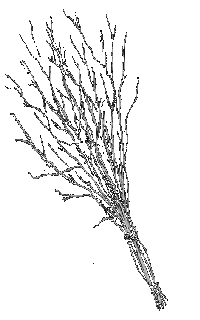

Jag och min syster har/får smisk av både mamma och pappa. Jag har nog fått mitt sista smisk men min syster får än idag.
Jag brukade få då jag varit extremt olydig. När inte alla varningar och samtal hjälpt från föräldrarna. Det kan ha blivit ca 8-10 gånger om året. Detsamma gäller min lillasyster.
Oftast fick vi aga med handen. Men ibland kunde vi få med björkris och hårborste. Alltid inom familjen. Men det var pinsamt att behöva få smisk inför sin lillasyster.

Senaste gången jag fick smisk var innan jag flyttade till eget boende. Det var i augusti detta år. Jag hade varit ute på fest och skulle komma hem klockan 02.00. Jag satt istället hos mina kompisar tills ca 05.30. När jag sedan vaknade dagen därpå så kom både mamma och pappa in och skällde. De hade varit oroliga hela natten och jag hade inte meddelat dem på något sätt.
Jag fick lägga mig på mage i min egen säng. Pappa smiskade mig sedan med ett björkris över min bara stjärt. Det sved jättemycket och jag skrekoch grinade under agan.
Jag tycker nog att jag förtjänade det smisket. Det var oansvarigt av mig att inte meddela mina föräldrar. Nu är det en annan sak när jag bor själv..